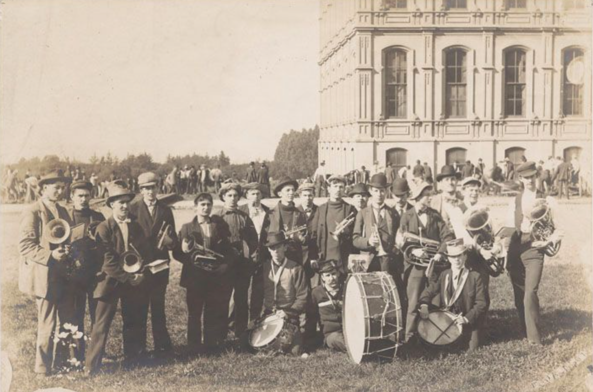
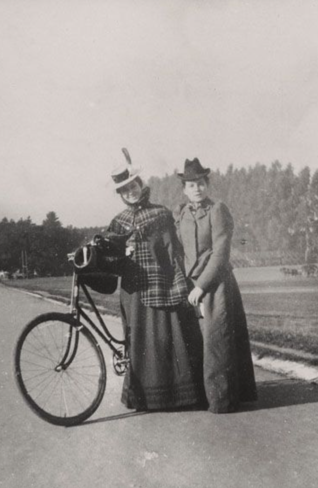
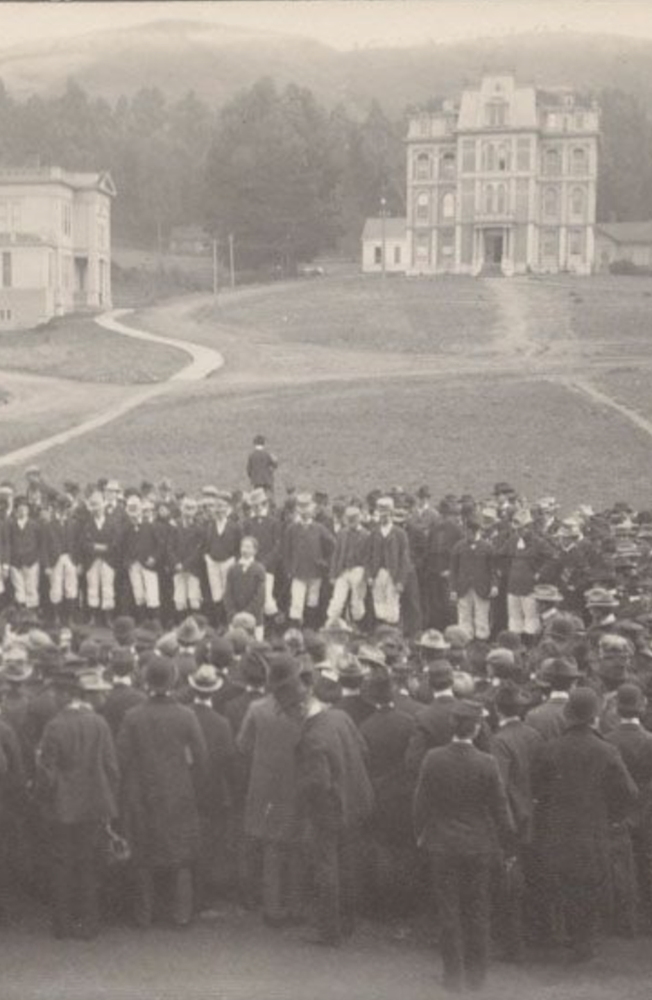
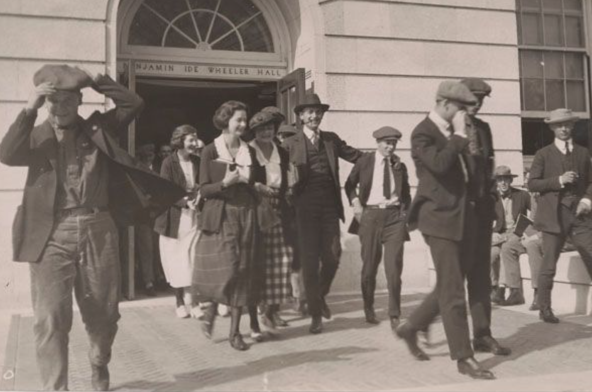
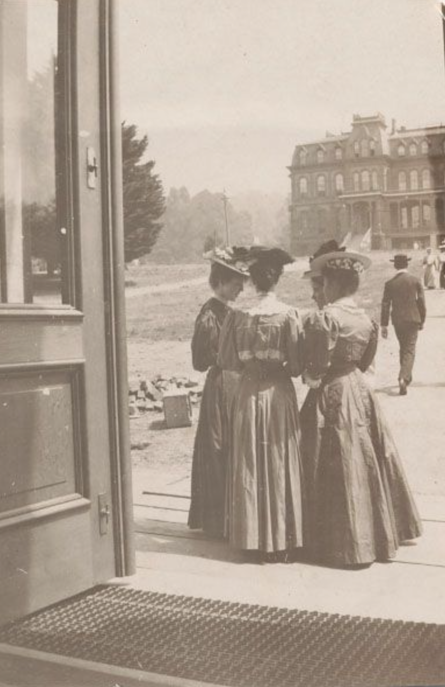
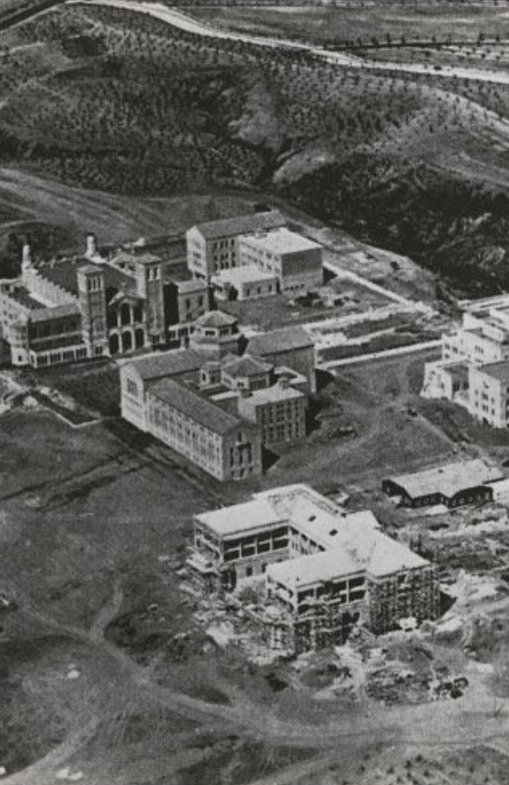

Example 1
Example 2
Example 3
Example 4
Example 5
Example 6
Example 7
Example 8
Example 9
Example 10
Example 11
Example 12

1891-1900

Labor Day, Feb. 29, 1896. Students on campus. Gift of Jean Hall Kalff and Kendall Hall.
Following years of calls from the public to open access to Berkeley’s excellent courses and programs, University Extension came to life in 1891 when three professors crossed the Bay by ferry to offer courses in San Francisco in history (Prof. Bacon), mathematics (Prof. Stringham) and English literature (Prof. Gayley) 2.
These long awaited education opportunities were met with much enthusiasm by the people of San Francisco, more than 800 people attended the first classes. However, following the official approval of Extension by the Academic Senate in 1892, a financial crisis hit the university and in 1893 the faculty was no longer able to provide courses to the public without being offered any compensation.


Women students with bicycle on path leading from west entrance to campus buildings, with portion of track bleachers in right background, late 1890's.
Skull and Keys Initiation in front of North Hall, November 8, 1899.
1901-1910

Students coming from Wheeler Hall, southeast entrance.
In 1902, the Board of Regents made University Extension an autonomous department under the leadership of the former Cornell history professor Henry Morse Stephens. Stephens was a fervent supporter of the original ideology of university extension’s: “I am longing to try my hand on a great Extension scheme on the Oxford line - I know I can do it and make a success of it.” In contrast to the initial ‘free lectures’ model of Gayley and his colleagues, Stephens designed and organized lectures to meet the needs and interests of adult professionals across the state. This model was operating largely independently of the Academic Senate, used mainly non-faculty lecturers offering non-credit courses, and was self-funded through a subscription model.
With this extremely agile and student-centric model, he created the fundamental concept of Continuing Education as we know it today. The success of this model and his own energy, engagement and popularity, allowed corres Extension to grow exponentially, reaching its peak of 15 centers around the state of California in 1905. However, when Stephens continued his career with other university appointments after 1905, Extension activities declined until they ultimately ceased in 1910.

